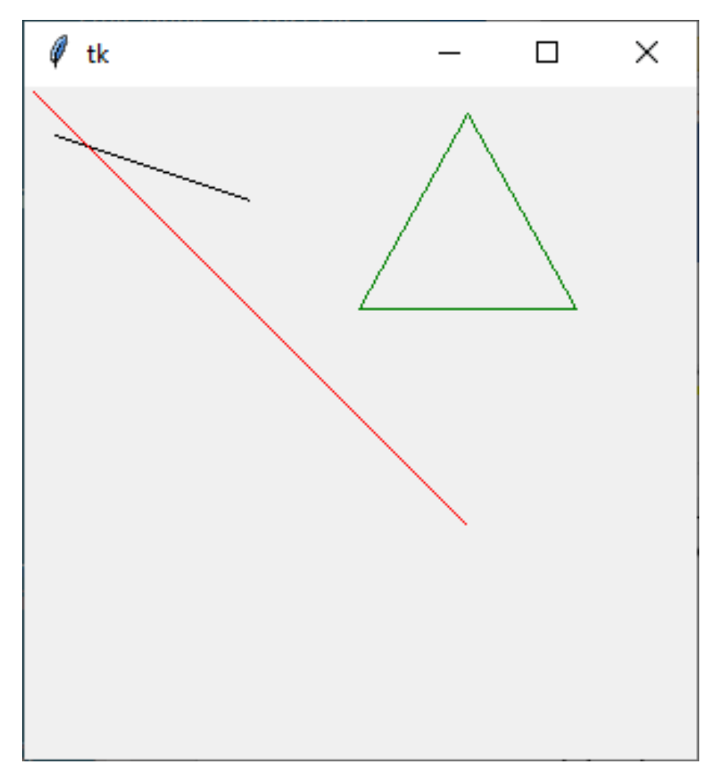
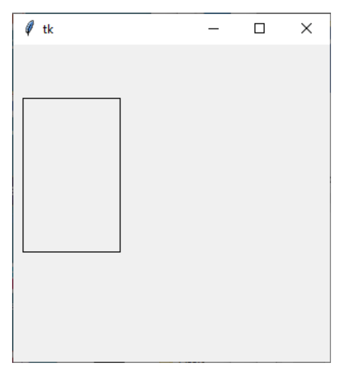
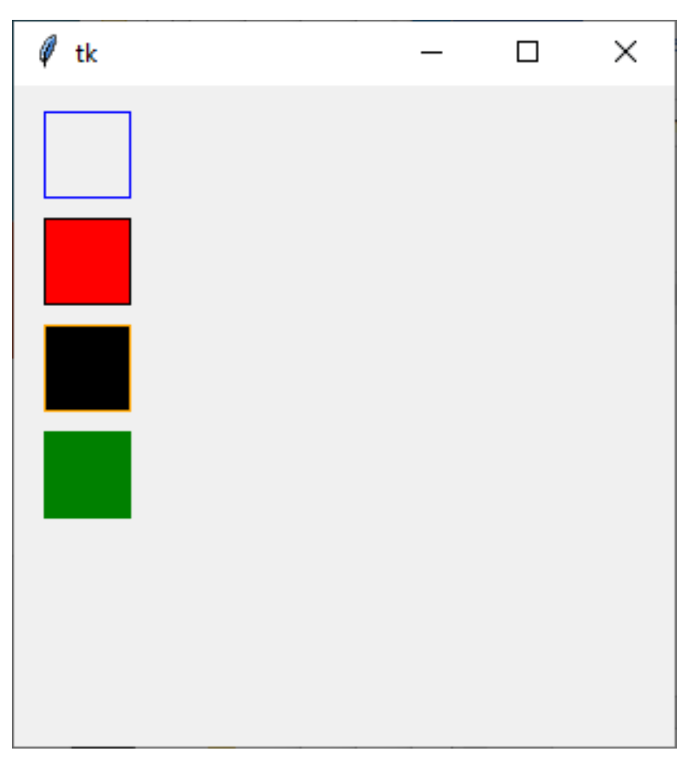
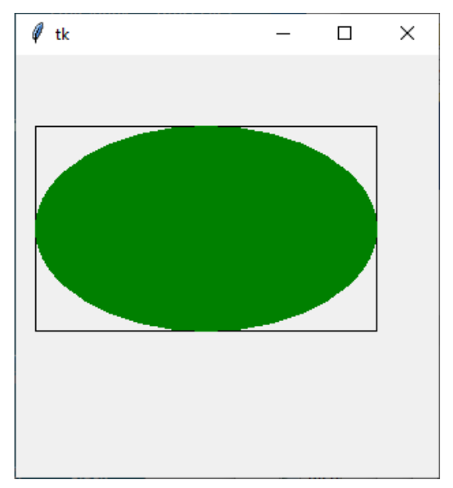
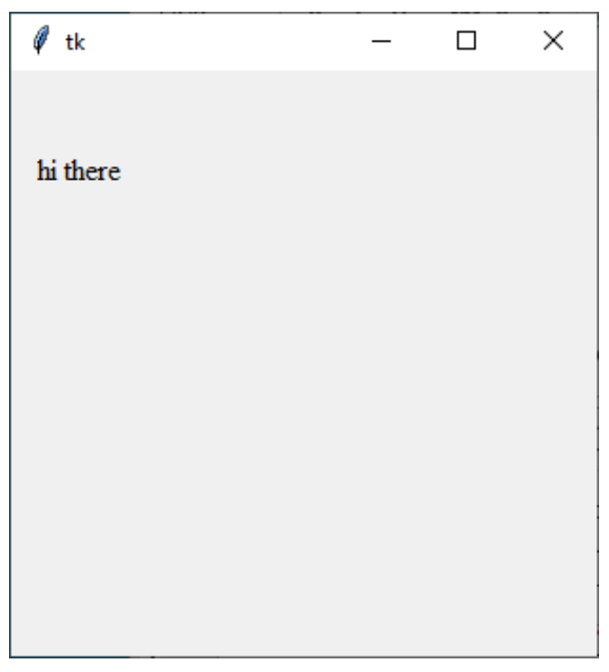
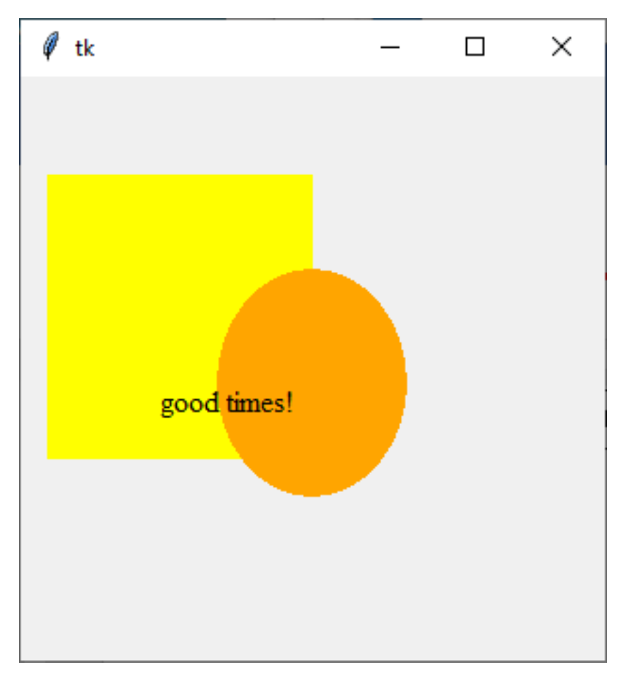

tkinter Graphics Reference
April 29th, 2020
Using Tk
One of the most common libraries to create graphics in Python is
called Tk. To use the Tk library in a program you must import it at
the top of your program (as shown below). The actual library name is
named tkinter.
import tkinter
The Canvas
The drawing model in Tk is that you have a canvas (much like a
painting) where you are going to draw various shapes. The canvas is
simply a grid of pixels that have x,
y values. The coordinate (0, 0) is in the
upper left-hand corner of the canvas. The values of
x increase as you move to the right. The values of
y increase as you move down. So, you can think of the
canvas as follows:

When we want to draw shapes on a canvas, we call functions on that
canvas that “create” the shape we want to draw. These shapes then
appear on the canvas. In CS106A, we will generally provide the code
that creates the canvas for you, so all you need to worry about is
adding shapes to that canvas. For the remainder of this handout, we
will assume that an object named canvas has already been
created, and it represents the Tk canvas that you’ll be drawing on.
Below we provide a brief tour of some of the different shapes you can
draw in a canvas as well as highlight a few of the options you have
with regard to how those shapes look.
Drawing lines
To draw lines on a canvas, the function we call is named
create_line, and we would use it as shown below:
canvas.create_line(x1, y1, x2, y2)
The parameters (x1, y1) set the starting
point of the line and (x2, y2) set the
ending point of the line.
For example, the following command would draw a line from location
(10, 20) to (100, 50) on the canvas:
canvas.create_line(10, 20, 100, 50)
We can also create colored lines, by including the named parameter
fill=
as shown below (here the line drawn will be green). Note that the name
of the color is specified as a string (i.e., it should be inside
single/double quotes).
canvas.create_line(x1, y1, x2, y2, fill='green')
By default (if the fill=parameter is not included), lines
will be black. Here is just a sample of some of the common colors you
can set in Tk:
red
blue
green
yellow
white
black
purple
brown
orange
gray
pink
tan
chartreuse
If you’re interested, you can find a ridiculously long list of colors
in the
Tk documentation.
Here is an example of some line drawing code and the resulting image
that is produced:
def draw(canvas):
canvas.create_line(10, 20, 100, 50)
canvas.create_line(0, 0, 200, 200, fill='red')
canvas.create_line(200, 10, 150, 100, fill='green')
canvas.create_line(150, 100, 250, 100, fill='green')
canvas.create_line(250, 100, 200, 10, fill='green')

Drawing Rectangles
You can also draw rectangles using the
create_recangle function. The parameters for drawing a
rectangle use the notion of a “bounding box.” The idea of a bounding
box is that you specify the coordinates of the upper left-hand corner
and lower right-hand corner of the rectangle you want to draw, which
then define the boundaries of the “box” that specifies the rectangle.
The create_rectangle function is shown below.
canvas.create_rectangle(up_left_x, up_left_y, low_right_x, low_right_y)
The parameters (up_left_x, up_left_y)
specify the (x, y) location of the upper left- hand corner of the
rectangle. The parameters (low_right_x,
low_right_y) specify the (x, y) location of the lower
right-hand corner of the rectangle.
For example, the following command would draw a rectangle with upper
left-hand corner at (5, 50) and lower right-hand corner at (100, 200)
on the canvas:
canvas.create_rectangle(5, 50, 100, 200)
That would appear as:

By default, rectangles are black outlines (the rectangle is not filled
in). As with lines, we can create colored rectangles. Here we can set
the color of the outline of the rectangle using the named parameter
outline= and we can also specify a color to fill in the rectangle
using the named parameter fill=. Note that the outline
and fill are separate, so if you want a rectangle that is a solid both
on its outline and filled in interior, you need to specify both
parameters. By default (if the outline= and/or
fill=
parameter are not included), the color will be black.
Examples of using these parameters are shown in the example below:
canvas.create_rectangle(10, 10, 50, 50, outline='blue')
canvas.create_rectangle(10, 60, 50, 100, fill='red')
canvas.create_rectangle(10, 110, 50, 150, fill='black', outline='orange')
canvas.create_rectangle(10, 160, 50, 200, fill='green', outline='green')
Immediately below we show the resulting image that is produced (the
rectangles shown in the picture below are in descending order,
corresponding to the order of the commands that created them). It
might be difficult to see, but the second rectangle has a black
outline around it (since the outline= parameter was not
set in the second rectangle, so the default outline color is black).
The third rectangle, which is filled in with black, actually has an
orange outline around it. The fourth rectangle is all green since both
its fill and outline are set to green.

Drawing Ovals
You can also draw ovals using the create_oval function.
The parameters for drawing an oval are similar to those for a
rectangle and use the notion of a “bounding box.” Here, the bounding
box for the oval is that you specify the coordinates of the
upper left-hand corner and lower right-hand corner of an
imaginary rectangle that specifies the size of the oval to draw.
Basically, the oval drawn will have its top, bottom, right, and left
just touching the sides of the bounding box you specify.
The create_oval function is shown below.
canvas.create_oval(up_left_x, up_left_y, low_right_x, low_right_y)
The parameters (up_left_x, up_left_y)
specify the (x, y) location of the upper left- hand corner of the
bounding box for the oval. The parameters (low_right_x,
low_right_y) specify the (x, y) location of the lower
right-hand corner of the bounding box for the oval.
For example, the following command would draw an oval with upper
left-hand corner at (5, 50) and lower right-hand corner at (100, 200)
on the canvas:
canvas.create_oval(5, 50, 100, 200)
That would appear as:
As with rectangles, by default, ovals are black outlines (not filled
in). But you can create colored ovals by using the named parameters
outline= and fill=which work the same for
ovals as they do for rectangles. To make clear the notion of a
bounding box, below we draw a green filled oval drawn on top of an
outline rectangle, where both the oval and rectangle have the same
bounding box coordinates.
canvas.create_rectangle(10, 50, 260, 200)
canvas.create_oval(10, 50, 260, 200, outline='green', fill='green')

Drawing Text
You can draw text using the create_text function. The parameters for
drawing text include the (x, y) location on
the canvas where the text should appear, the “anchoring” location (we
will just use 'w'for West, which means the
(x, y) location of the text specifies the
starting point (left-hand or west side) of the text), the font for the
text, and the text to be drawn. An example of the
create_text function is shown below.
canvas.create_text(x, y, anchor='w', font='Times', text='hi there')
For example, the following command would draw the text "hi there" in
Times font starting at location (10, 5):
canvas.create_text(10, 50, anchor='w', font='Times', text='hi there')
That would appear as:

Ordering of drawings
Objects are drawn on the canvas in the order in which they are created
by your code. So, if you draw an object after another some other
object in your code, the second object drawn can potentially cover
(occlude) part of the object that was drawn first. This is sometimes
referred to as the z-order of the objects.
As an example, below, we first draw a yellow rectangle, then draw an
orange oval (which partly overlaps the rectangle), and then some text
(that is on top of both the rectangle and the oval).
canvas.create_rectangle(10, 50, 150, 200, fill='yellow', outline='yellow')
canvas.create_oval(100, 100, 200, 220, fill='orange', outline='orange')
canvas.create_text(70, 170, anchor='w', font='Times', text='good times!')
That would appear as:

That gives you enough of the basics of drawing with Tk, so you can
make some pretty beautiful drawings. Enjoy!